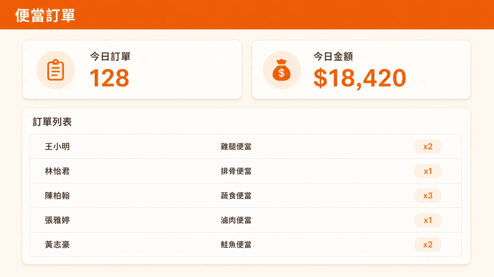
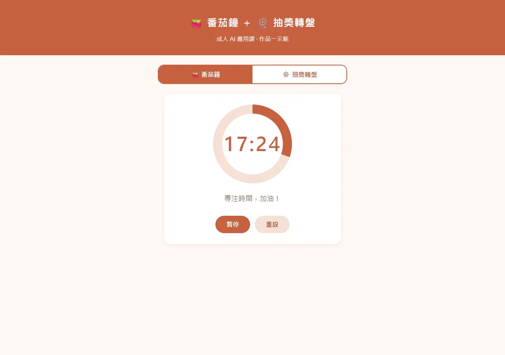
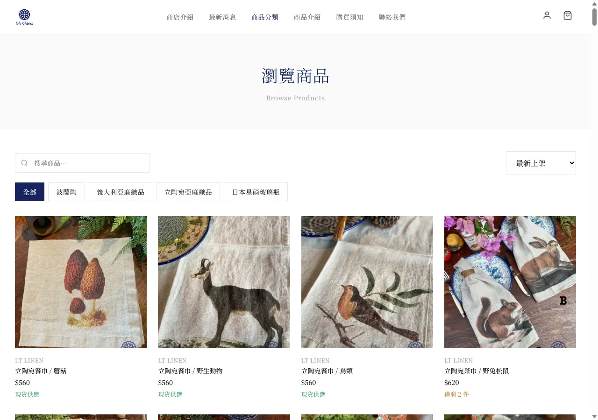

日報、點檢、庫存，這裡一張表、那裡一疊紙。想找個系統來管，問了廠商要幾十萬，只好算了。
試過 ChatGPT，一開始很順。可是改一個地方就壞另一個，跳出的英文看不懂，只能重來。
網頁看起來有模有樣，但填的資料存去哪、同事怎麼一起用、網址怎麼給大家，全都卡住。
從 AI 底層理解工具——4D 設計法
先決定這次交給 AI 哪件事
把想法說成 AI 能執行的規格
不只相信 AI，親手驗證結果
對資料、安全與上線結果負責

每天中午幫全課訂便當的人，打開後台，誰訂了什麼、幾筆品項，一眼看完——不用再對著 LINE 訊息逐筆數。

自習室裡番茄鐘倒數計時，讀完一輪，轉盤抽個小獎勵。

前兩個為 6 小時課堂範例，題目可以換成你自己的——設備點檢、報修登記、領料紀錄都行；波波聚是學員課後持續開發、實際上線營運的作品。
結業成果：一個具備前端、資料庫與完整 CRUD、可公開分享的網站。
第一階段｜找到適合完成的題目
縮小需求，定義使用者與核心功能
第二階段｜使用 4D 與 Claude 協作
讓 Claude 先規劃，再逐步修改
第三階段｜完成網站前端
做出首頁、清單、表單與手機版
第四階段｜加入資料庫
串接 Supabase，完成新增查改刪
第五階段｜測試與除錯
讀懂錯誤訊息，測正常與異常流程
第六階段｜公開部署
上傳 GitHub，取得 Vercel 公開網址
結業成果：一個具登入、資料權限、測試與維運文件的商用 MVP。
第一階段｜商用需求健檢
確認使用者、資料與必要功能
第二階段｜建立 AI 專案守則
訂出技術、修改與安全規則
第三階段｜使用者登入
完成註冊、登入與頁面保護
第四階段｜資料權限
用 Auth 與 RLS 隔離使用者資料
第五階段｜商用流程與錯誤處理
補上驗證、狀態與失敗處理
第六階段｜測試、部署與維運
分開測試與正式環境，能回復版本
點檢、報修、領料這些紙本流程，變成手機就能填的系統。
交接紀錄、人員排班、日報統計，一個後台看完。
報名、借用、請購登記，不再用 Excel 傳來傳去。
想先做出一個能測試市場的 MVP。
這堂課的重點不是堆功能，而是建立一套未來能一直用的 AI 協作能力。
十多年科技教育經驗，從系統工程師走進教室，專長 AI、物聯網與機器人教育。
全程使用 Claude——Anthropic 開發的 AI 助手，目前公認最會寫程式的 AI。課堂上用的是它的開發版 Claude Code，帳號申請與安裝，第一小時老師帶你一步步完成。
可以。初階就是為沒有程式背景的人設計；你不需要先會寫程式，但需要願意描述需求、動手操作網站、檢查結果。
不用。課程不以背語法為主，你會認識網站的基本結構，學會用 Claude 協助完成、修改與驗證功能。
可以，但有前提：使用老師準備的 Starter Project，並把題目收斂在一個清楚的核心流程，不在六小時內挑戰大型平台。
初階作品適合公開展示與概念驗證。要給真實使用者用，建議完成進階課程，補上登入、資料權限、測試與維運流程。
帶一個想解決的問題來——點檢表、排班、訂便當都行，六小時後帶一個能用的網站走。
加 LINE，開課第一時間通知你開課資訊：【籌備中】日期・費用・名額確定後，LINE 好友最先收到早鳥通知